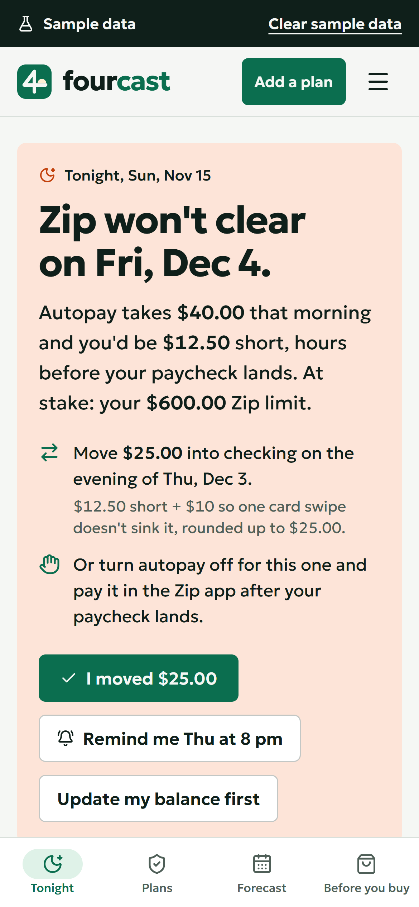
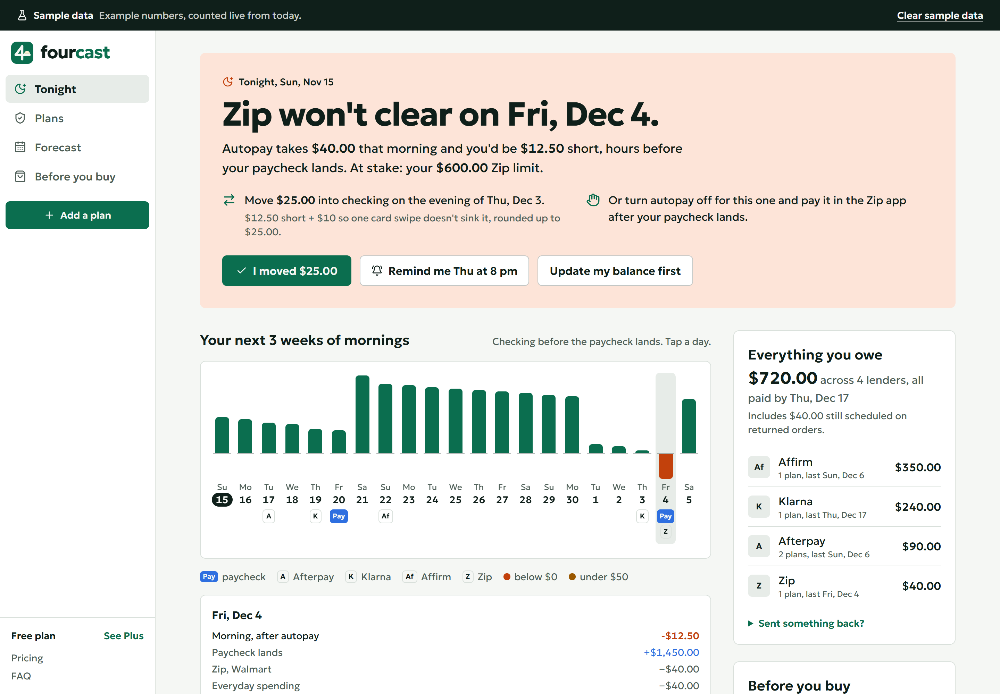
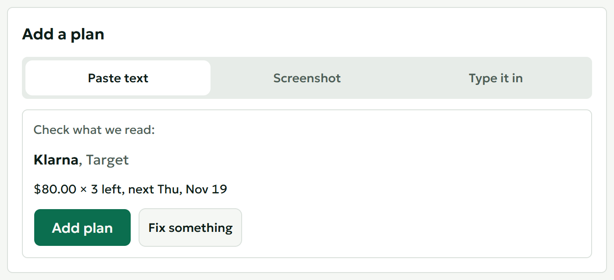
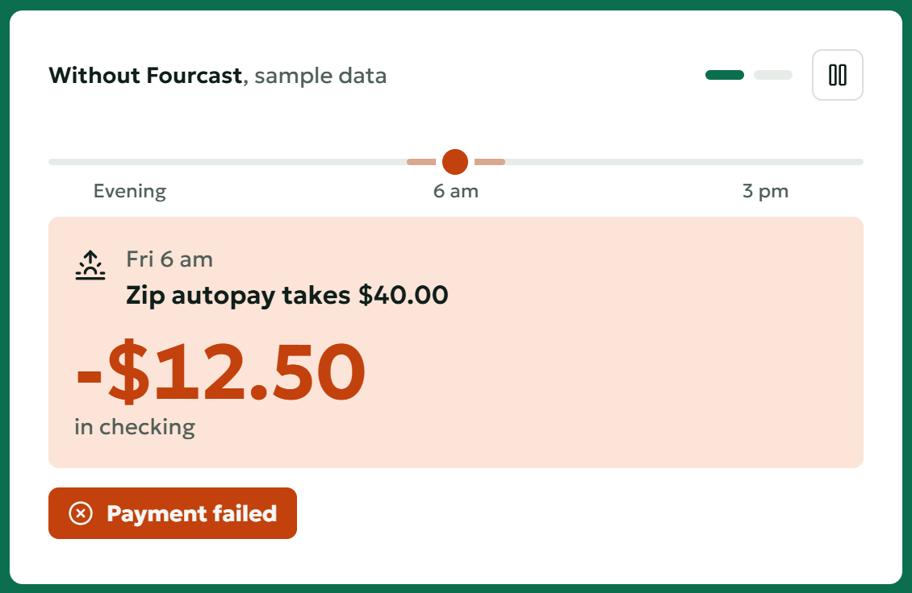
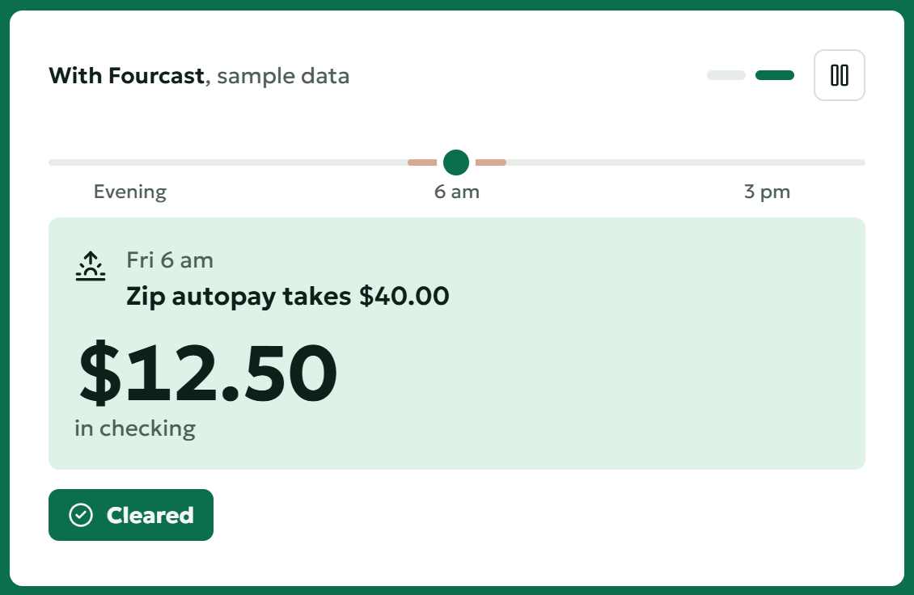
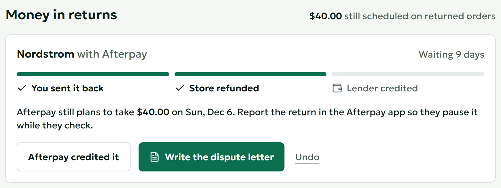
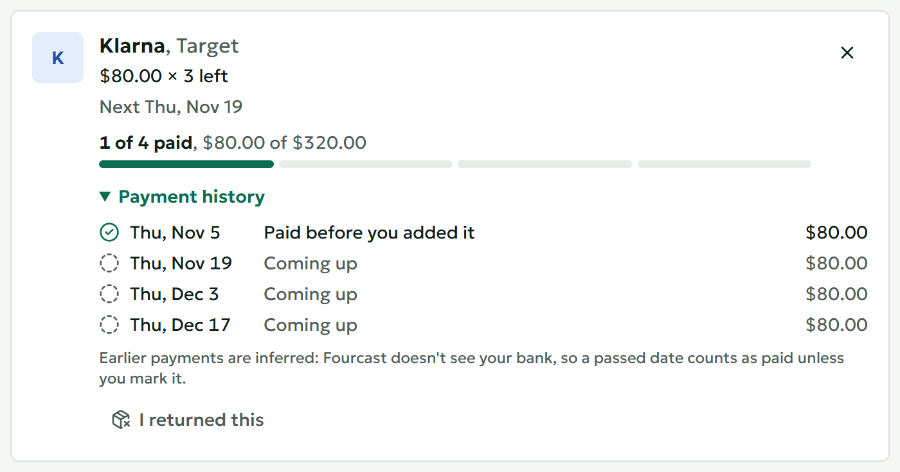
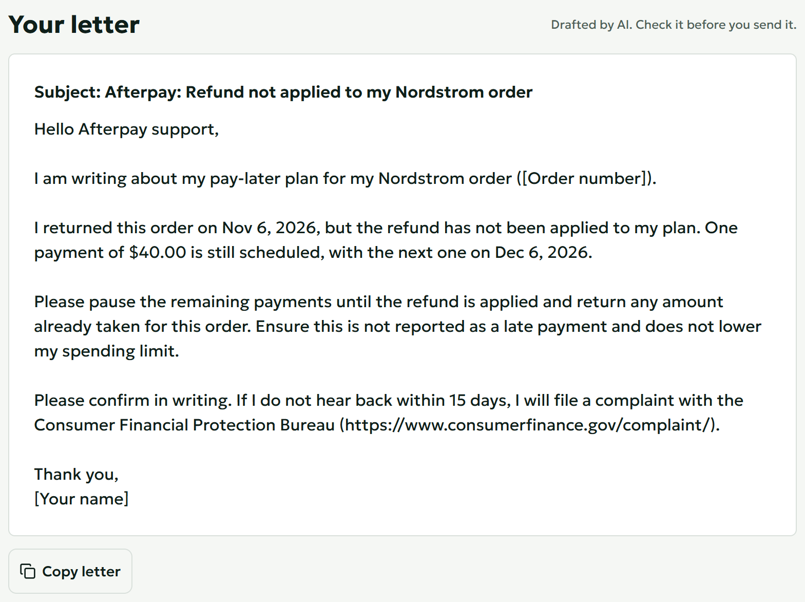
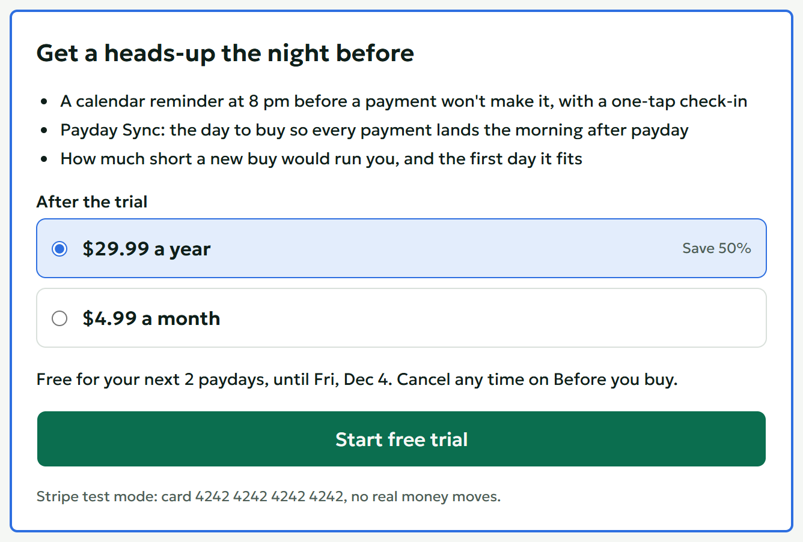

fourcast
A web app for Americans aged 25–45 who pay off Pay in 4 plans at several lenders at once.
Track: Money
Business Cup 2.0, AIESEC NU × Zimran. Team Fourcast: Ayat and Beksultan.
Live: fourcast-zimran.vercel.app
Code: github.com/karimbeksultan/fourcast

“they try to take a payment off your card at 6 in the morning”
Afterpay user, US App Store review, 27 Apr 2026. Their paycheck lands at 3–4 pm the same day.
“Missed a $7 payment by 5 hours… my spending power went from 1000 to 200.”
Afterpay user, US App Store review, 2026
Our user is a working American, 25–45, paid every two weeks, with Pay in 4 plans at two or more lenders. This is a composite from reviews, not an interview.
26%
of US pay-later users paid late in the past year
31%
of users aged 30–44 paid late
11%
had a pay-later payment set off a bank overdraft or NSF fee
Federal Reserve, Economic Well-Being of U.S. Households in 2025; App Store reviews
2
A third of pay-later borrowers hold loans at several lenders at once. Nobody puts those payments next to the paycheck and says which one won’t make it.
| Who | Sees the payment dates | Sees the paycheck | Warns the evening before |
|---|---|---|---|
| Lender apps | Its own plans only | No | No |
| Bank app | No | Yes | Only once the balance is low |
| Budget apps (Rocket Money, Monarch) | Past debits only | Yes | Only once the balance is low |
| Pay-later trackers (Finny, PayStreak) | Yes, typed in | We didn’t find it | We didn’t find it |
| Fourcast | All lenders, typed in or read by AI | Yes | Yes, with the amount to move |
CFPB, Jan 2025 (33% across lenders, 2022 data); public product pages and reviews, Nov 2026
3

It names the payment
“Zip won’t clear on Fri, Dec 4”: $12.50 short, hours before the paycheck, with the $600 limit at stake.
It gives one action
Move $25 the evening before, or pay by hand after the paycheck lands.
It shows why
Three weeks of morning balances: after autopay, before the paycheck.
No sign-up, no bank link
Plans are saved only in the browser.
Live screenshot of fourcast-zimran.vercel.app/tonight on the built-in sample data
4

1. AI reads the plan
Paste a confirmation or a screenshot. AI pulls out lender, amount, payments left and next date; you confirm. Typing it in always works.

2. Code checks every morning
A 42-day simulation checks every payment against the morning it’s taken, before the paycheck.

3. One action the evening before
Move $25 in, and the same payment clears. The limit stays.
45 automated tests, golden numbers included
Sample data runs through the same code
No sign-up, no bank link
Live screenshots. The math is plain TypeScript in lib/plan.ts; AI only reads input and drafts letters
5

Returns: where the refund is stuck

Each plan: paid, due and coming up

Dispute letter, drafted live by AI from the plan
CFPB complaint database, Nov 2026: 447 of Klarna’s 3,261 complaints are unresolved purchase disputes
6
Free
Plus, $29.99 a year
or $4.99 a month; free until the second payday

Why they come back
Checkout runs in Stripe test mode (card 4242…). Loans per lender: CFPB, Dec 2025 (2023 data)
7
| Unit economics | Number and source |
|---|---|
| Price | $29.99 a year, about $27 after fees |
| Trial to paid | 35–42% for trials of 10–32 days (RevenueCat 2026 report, all app categories) |
| Still paying after a year | 28% of yearly plans (RevenueCat 2026 benchmarks) |
| LTV | About $37 |
| CAC ceiling | $27: the yearly plan pays back on day one |
| Paid ads | $4.13 an install × 2.1% to paid ≈ $200 a payer. They don’t pay back. |
Growth: search at the moment of pain
“why did klarna lower my limit”
“klarna payment failed but money in bank”
“afterpay refund not showing up”
Google US autocomplete, Nov 2026. Organic search: CAC must stay under $27, about $0.57 a visit at 2.1% to paid; volumes not measured yet.
Market
RevenueCat 2026; Adjust 2026; CFPB. ARR: $42 a payer before fees and churn (60% yearly); LTV: $27 net
8
Proven
Not yet
The hardest question: why would someone short on cash pay?
One overdraft costs $26.77 on average, about a year of Plus. Cushion, a pay-later tracker that raised over $20M, closed in 2024 without reaching scale; Fourcast needs no bank link and costs almost nothing to run.
Bankrate checking account survey, 2025; American Banker and Banking Dive on Cushion, Feb 2025
9
The morning model
Every payment is checked against the morning it’s taken, before the paycheck, across all lenders.
Payday Sync
The day to buy so that every payment lands the morning after a payday.
Refunds followed to the end
Sent back, store refunded, lender credited, and a ready dispute letter when it stalls.
Next: reminders by push or SMS, a field for when the paycheck lands, an optional bank link.
fourcast-zimran.vercel.app
Open it and press “Try it with sample data”. No sign-up.
Code: github.com/karimbeksultan/fourcast
Fourcast, track Money. Not financial advice.
10